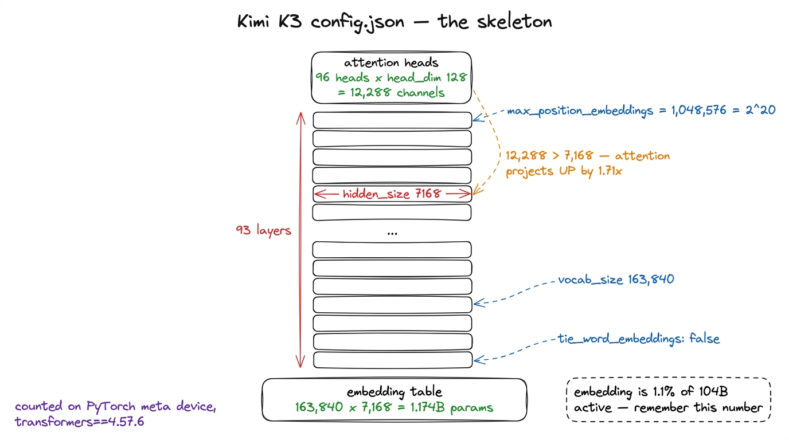
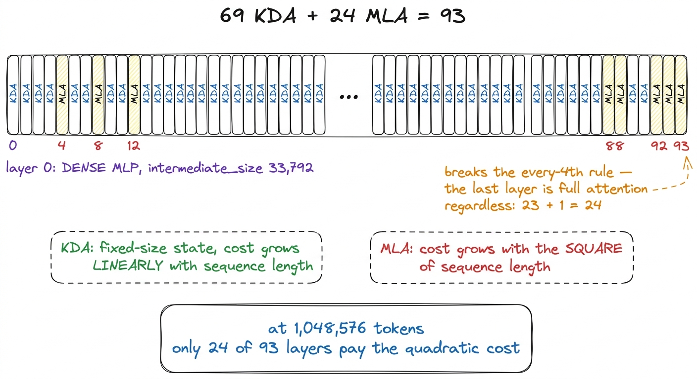
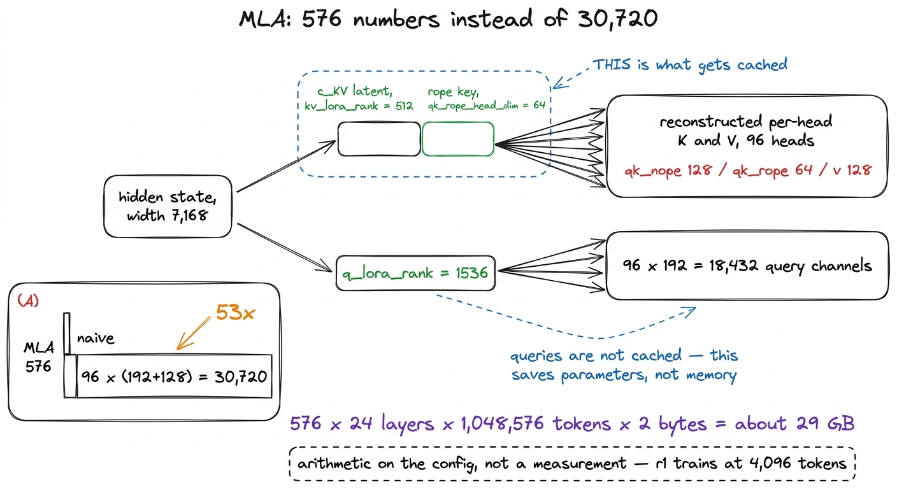
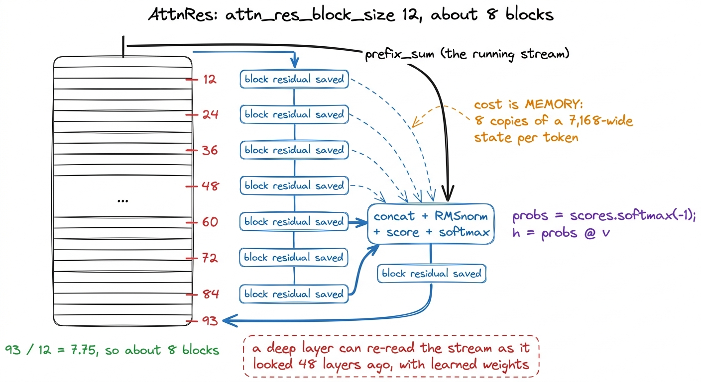
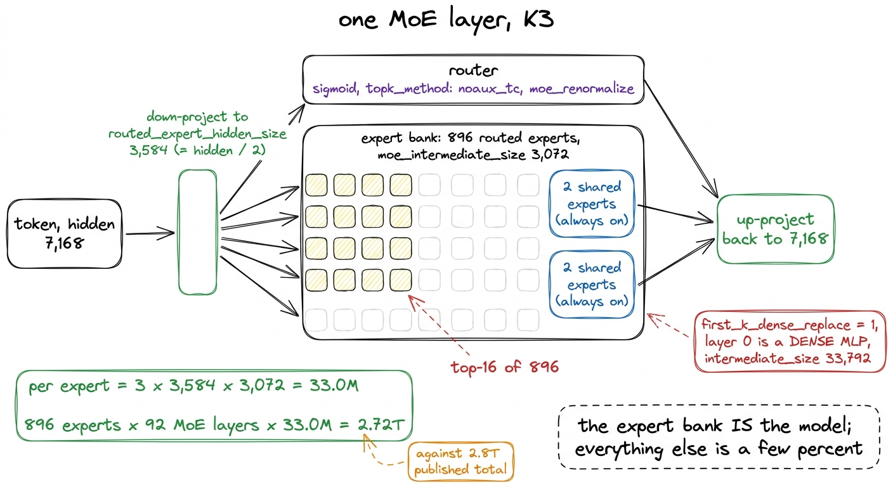

Reading K3's config, line by line
93 layers, hidden 7,168, 896 experts with 16 active, 69 KDA layers against 24 MLA, situ, noaux_tc — the released configuration turned into a mental model of where every FLOP goes.
Kimi K3 ships as 96 safetensors shards totalling 1.561 terabytes. The file that tells you what is inside them is a few dozen lines of JSON, and it is the most useful document in the release. Every decision in this book about what to keep, what to shrink and what to leave exactly as it is came from reading that file and working out what each field costs.
This chapter reads it field by field. The goal is not a description of the architecture, which the companion book builds module by module in runnable code, but a mental model of where a token's compute goes, precise enough that when we start removing zeros from these numbers we know which ones can move and which cannot.
We read the configuration by instantiating Moonshot's own released modeling_kimi_linear.py on PyTorch's meta device, where parameters have shapes but no storage, so a 2.8-trillion-parameter model costs nothing to count.1 transformers has to be pinned to 4.57.6 for this to work at all. A >=4.56 constraint resolves to the 5.x line, which removed transformers.utils.generic.OutputRecorder, an import the released Kimi modeling code makes at module scope. The failure happens before a single parameter is counted, and the traceback points at transformers rather than at Kimi. Every number below either appears in that configuration or is arithmetic on fields that do.
The skeleton
Six fields fix the overall shape of the model.
| field | value |
|---|---|
hidden_size | 7,168 |
num_hidden_layers | 93 |
num_attention_heads | 96 |
head_dim | 128 |
vocab_size | 163,840 |
max_position_embeddings | 1,048,576 |
Three are worth pausing on.
96 heads at head_dim 128 is 12,288 channels of attention against a residual stream of 7,168. Attention projects up by a factor of 1.71 rather than partitioning the hidden size the way a textbook multi-head layer does. The head dimension is a fixed quantity here rather than a derived one, which is why our replica keeps head_dim at 128 while shrinking hidden_size by a factor of fourteen.
The vocabulary is 163,840 tokens, and at hidden 7,168 that embedding table is 163,840 × 7,168 = 1.174 billion parameters. Against 104 billion active parameters per token, one copy of it is 1.13% of the model's active parameters. Our parameter counter measures 1.1%, which agrees. Hold that number; it is the subject of the last section of this chapter and most of the next one.
The context is 1,048,576 tokens, which is 2^20. Almost everything unusual in the attention stack follows from that field, because at a million tokens the key-value cache, not the arithmetic, decides whether the model can run.

figure rendering · The six fields that fix K3's shape, and the one ratio that is not whatThe attention schedule, and why 93
The single most informative line in the file is the list of full-attention layers: [4, 8, 12, ... 88, 92, 93]. Twenty-four entries. The other 69 layers are Kimi Delta Attention, a linear-attention variant that carries a fixed-size recurrent state rather than a growing cache.
Count the schedule carefully and something falls out. Every fourth layer from 4 to 92 gives 23 layers. The twenty-fourth entry is 93, the last layer in the stack, which is off that rhythm. The rule is "every fourth layer, plus the final layer regardless", and 93 is what you get when you want 23 clean four-layer blocks and then one more full-attention layer at the top.2 The config exposes this through a helper that is one-indexed: is_kda_layer tests whether layer_idx + 1 is in kda_layers. Reading the list as zero-indexed shifts the entire schedule by one layer, which changes which layers are quadratic and produces a model that trains without complaint and is not K3. We hit this when writing the replica config and caught it by counting the resulting layer types rather than by reading more carefully.
The compute consequence is direct. Full attention costs work proportional to the square of the sequence length; KDA layers cost work proportional to the sequence length, because their state does not grow. At a context of 1,048,576 tokens, 24 of 93 layers carry the quadratic term instead of all 93. Roughly one layer in four is where long-range exact retrieval happens, and the other three quarters approximate it cheaply.
The 3:1 ratio is the piece of K3 our replica preserves most exactly. r1 has 12 layers, 3 of them full attention at indices 4, 8 and 12. The rule is identical; only the count changed.

figure rendering · The attention schedule. Our replica keeps the rule exactly and changesWhat MLA's five numbers buy
The full-attention layers are Multi-head Latent Attention, and the configuration describes them with five fields: qk_nope_head_dim 128, qk_rope_head_dim 64, v_head_dim 128, kv_lora_rank 512 and q_lora_rank 1536.
The first three split each head. A query and key carry 128 channels with no positional rotation and 64 channels with it, for 192 per head; a value carries 128. That asymmetry between query width and value width forces the padding branch in the released attention implementation, and it is the reason our MLA runs on an sdpa shim registered under the flash_attention_2 key: the model hard-forces that string, and the asymmetric-head-dim padding only runs on that branch. Numerically identical, slower, and any MFU measured this way understates what flash attention would give.
The last two fields are the ones that make a million-token context tractable. Rather than caching keys and values per head, MLA caches a single compressed latent of width kv_lora_rank = 512 plus the shared rotary key of width 64, and reconstructs the per-head keys and values from it. The arithmetic on those two fields:
cached per token per layer, MLA: 512 + 64 = 576 values
cached per token per layer, naive: 96 heads x (192 + 128) = 30,720 valuesA factor of 53. Carried across the 24 full-attention layers at the full 1,048,576-token context in bf16, the MLA cache is 576 × 24 × 1,048,576 × 2 bytes, or about 29 GB; the naive arrangement would be roughly 1.5 TB, which is more than the weights. This is arithmetic on the configuration rather than something we measured — r1 trains at a 4,096-token context and never came close to either figure — but it explains why the fields have the values they do.
q_lora_rank 1536 does the same thing on the query side, compressing the residual stream to 1,536 before expanding to 96 × 192 = 18,432 query channels. It saves parameters rather than cache, since queries are not cached.
r1 keeps the 128/64/128 split unchanged, because it is a ratio between head components rather than a function of model width. It does not keep 512 and 1536, which are widths.

figure rendering · Multi-head Latent Attention. The cache holds a compressed latent and rKDA's four numbers
The 69 linear-attention layers are described by four fields inside linear_attn_config: head_dim 128, short_conv_kernel_size 4, gate_lower_bound −5.0 and use_full_rank_gate.
short_conv_kernel_size 4 places a depthwise causal convolution of width 4 in front of the recurrence. The released parameter names make the placement explicit: each KDA layer carries q_conv1d, k_conv1d and v_conv1d tensors, so all three projections are convolved before the state update. A linear recurrence mixes information across time through its state and not otherwise, so a short convolution is where immediately local structure gets handled.
use_full_rank_gate means the forget gate is per channel rather than per head. Each of the 128 channels in a head decays at its own learned rate, so one head can hold some channels almost indefinitely while flushing others every token. That is the difference between a gate that is a scalar knob on a head and a gate that is a shaped filter over the state.
gate_lower_bound −5.0 floors that gate before it is exponentiated, which bounds how fast any channel can discard its state.3 We kept −5.0 unchanged and never measured what happens without it, so this chapter states what the field does and not what it is worth. The one KDA field that did cost us a run is not in the config at all: KimiDeltaAttention.dt_bias is allocated with torch.empty and the released _init_weights covers only nn.Linear and nn.Embedding, so the timestep bias is uninitialised memory. It fails non-deterministically. Rung r2 trained normally from it while r1 returned NaN from step 0.
r1 keeps head_dim 128, the convolution width, the gate bound and the full-rank gate, and reduces the head count to 4. The mechanism itself is covered in the chapter on the attention stack.
Attention residuals: eight blocks over 93 layers
attn_res_block_size is 12, and 93 divided by 12 is 7.75, so the stack carries about 8 blocks. This is the least familiar part of K3, and the released code describes it best:
def _apply_attn_res(prefix_sum, block_residual, proj, norm):
# prefix_sum: (num_tokens, hidden_size)
# block_residual: (num_tokens, num_blocks, hidden_size)
v = torch.cat((block_residual, prefix_sum.unsqueeze(1)), dim=1)
v_float = v.float()
variance = v_float.pow(2).mean(-1, keepdim=True)
k = v_float * torch.rsqrt(variance + norm.variance_epsilon)
score_weight = norm.weight.float() * proj.weight.squeeze(0).float()
scores = (k * score_weight).sum(-1)
probs = scores.softmax(-1).unsqueeze(1)
hidden_states = torch.matmul(probs, v_float).squeeze(1)At each block boundary the model takes the residuals saved at every earlier boundary, appends the current running stream, normalises them, scores each one against a learned vector, and takes a softmax-weighted average. A layer 60 deep in the stack can therefore read a mixture of the stream as it looked at layers 12, 24, 36 and 48, with weights the model chose, rather than only the stream as it looks now.
The cost is memory rather than arithmetic. The softmax runs over about nine candidates and is negligible; keeping num_blocks copies of a 7,168-wide hidden state alive for every token, through the whole forward pass, is not. r1 sets attn_res_block_size to 1 over 12 layers, which gives the same 8 blocks at a twelfth of the depth.

figure rendering · Attention residuals. Cheap in arithmetic, expensive in activation memoThe mixture of experts, and where the parameters actually live
first_k_dense_replace is 1, so layer 0 is an ordinary dense MLP with intermediate_size 33,792, which is 4.71 times the hidden size. Every layer after it is a mixture of experts.
The MoE fields are num_experts 896, num_experts_per_token 16, num_shared_experts 2 and moe_intermediate_size 3072. A token entering an MoE layer is processed by the two shared experts always and by 16 of the 896 routed experts. Eighteen expert MLPs of width 3,072 per token per layer, out of 898 available.
The field that changes the arithmetic is routed_expert_hidden_size 3584, which is exactly half of 7,168. The experts do not operate on the residual stream at its full width. The token is projected down to 3,584, run through the expert bank, and projected back up. Every matrix in every expert is therefore half as tall as it would otherwise be, which halves both the parameter count and the FLOPs of the routed path.
That field is what makes the total parameter count land where it does. A gated expert MLP holds three matrices, so each expert is 3 × 3,584 × 3,072 ≈ 33.0 million parameters. There are 896 of them in each of 92 MoE layers:
896 experts x 92 MoE layers x 33.0M = 2.72T parametersAgainst a published total of 2.8 trillion. The expert bank is essentially the entire model. Everything else in K3 — 93 layers of attention, the embedding table, the dense layer 0, the routers, the attention residuals — is the remaining few percent. That is what a sparsity of 26.9× looks like from the inside, and it is the reason the chapter on scaling down spends its time on expert count and expert width rather than on layers and hidden size.
Three more fields specify the router: moe_router_activation_func sigmoid, topk_method noaux_tc, and moe_renormalize. Sigmoid rather than softmax means the 896 scores are computed independently, with nothing forcing them to compete; moe_renormalize then rescales the 16 selected weights so they sum to one.4 The router is where the configuration and the code disagree. The released model carries e_score_correction_bias, the tensor the noaux_tc balancer writes into, and nothing ever initialises or updates it. The field names an algorithm the release does not contain. noaux_tc is the aux-loss-free load balancer, and it is the field that cost us the most engineering, because it is the one the released training code does not implement at all. The chapter on expert collapse is entirely about that.

figure rendering · An MoE layer. The latent bottleneck at half the hidden size halves thesitu, and why it shows up again in the MFU chapters
hidden_act is situ, with activation_situ_beta 4.0 and activation_situ_linear_beta 25.0. The released implementation is short:
def forward(self, x):
d = x.shape[-1] // 2
gate = x[..., :d].to(torch.float32)
up = x[..., d:].to(torch.float32)
situ_a = self.beta * torch.tanh(gate / self.beta) * torch.sigmoid(gate)
if self.linear_beta is not None:
up = self.linear_beta * torch.tanh(up / self.linear_beta)
return (situ_a * up).to(x.dtype)Both halves of the gated MLP pass through a tanh scaled by a constant, so the gate branch saturates near ±4.0 and the linear branch near ±25.0. It is a bounded activation, and the two betas are where the bound sits.
Note the two .to(torch.float32) calls. Every activation entering this function is upcast, and the intermediates are held in float32 at the widest point in the network. That detail is invisible when reading the architecture and expensive when running it. Two of our sixteen MFU attempts landed on it: stopping situ from holding float32 freed 40 GB of memory for +0.1 percentage points of MFU, and fusing the whole function into a single Triton kernel gave 1.38×, moving MFU from 5.6% to 7.7%. Both were measured on r2, the rung above ours, on one H200. The fused kernel was not faster at equal batch size; it won entirely by freeing memory that bought a 50% larger microbatch.
r1 keeps situ with both constants unchanged, because an activation function is a shape rather than a size and there is no defensible way to scale it.
The arithmetic at the bottom of the file
The published figures are 2.8 trillion total parameters and 104 billion active per token, a sparsity of 26.9×. Before trusting any count of our own replica, we ran our parameter counter on K3's own configuration:
| our counter | published | error | |
|---|---|---|---|
| total | 2,779.5B | 2,800B | −0.7% |
| active | 105.4B | 104B | +1.3% |
| sparsity | 26.4× | 26.9× | −1.9% |
| embedding share of active | 1.1% | 1.1% | exact |
Agreement within 1.3% on a model we did not design, from a configuration we did not write, is the control that licenses every parameter count in the rest of this book. A counter validated only against its own assumptions is not evidence of anything. The chapter on counting the parameters covers how it works and what it says about r1.
The row that matters most is the last one. At hidden 7,168, K3's 163,840-token embedding table is 1.1% of the model's active parameters. It is a rounding error. Moonshot can afford tie_word_embeddings: false and carry two separate copies of it, and the decision costs them nothing worth discussing.
Take that same tokenizer, unchanged, down to a hidden size of 512, and the embedding table is 83.9 million parameters against 145 million active. 58%. The same field, the same vocabulary, the same tokenizer we deliberately refuse to retrain, moves from a rounding error to the majority of the model.
Nothing else in this configuration behaves that way under scaling. Layers scale, hidden size scales, expert count scales, and the ratios between them can be preserved. The vocabulary is a fixed cost, and at small scale it dominates. That is the finding the next chapter is built around, and it is the reason a plan asking for a 40-million-active-parameter replica was arithmetically impossible before anyone wrote a line of training code.